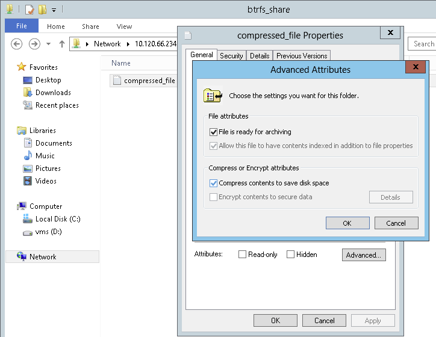
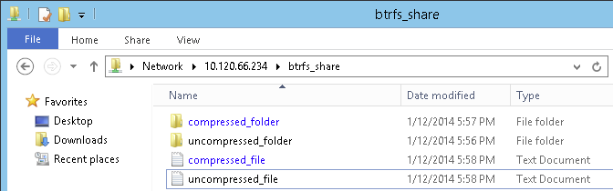
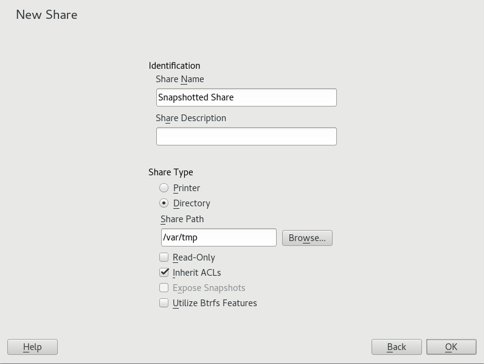

20.8. Advanced topics
This section introduces more advanced techniques to manage both the client and server parts of the Samba suite.
20.8.1. Automounting CIFS file system using systemd
You can use systemd to mount CIFS shares on startup. To do so, proceed as described further:
-
Create the mount points:
>mkdir -p PATH_SERVER_SHARED_FOLDERwhere PATH_SERVER_SHARED_FOLDER is
/cifs/sharedin further steps. -
Create the
systemdunit file and generate a file name from the path specified in the previous step where "/" are replaced with "-", for example:>sudotouch /etc/systemd/system/cifs-shared.mountwith the following content:
[Unit]Description=CIFS share from The-Server[Mount]What=//The-Server/Shared-FolderWhere=/cifs/sharedType=cifsOptions=rw,username=vagrant,password=admin[Install]WantedBy=multi-user.target -
Enable the service:
>sudosystemctl enable cifs-shared.mount -
Start the service:
>sudosystemctl start cifs-shared.mountTo verify that the service is running, run the command:
>sudosystemctl status cifs-shared.mount -
To confirm that the CIFS shared path is available, try the following command:
> cd /cifs/shared>ls -ltotal 0-rwxrwxrwx. 1 root root 0 Oct 24 22:31 hello-world-cifs.txtdrwxrwxrwx. 2 root root 0 Oct 24 22:31 subfolder-rw-r--r--. 1 vagrant vagrant 0 Oct 28 21:51 testfile.txt
20.8.2. Transparent file compression on Btrfs
Samba allows clients to remotely manipulate file and directory compression flags for shares placed on the Btrfs file system. Windows Explorer provides the ability to flag files/directories for transparent compression via the dialog:

Files flagged for compression are transparently compressed and decompressed by the underlying file system when accessed or modified. This normally results in storage capacity savings at the expense of extra CPU overhead when accessing the file. New files and directories inherit the compression flag from the parent directory, unless created with the FILE_NO_COMPRESSION option.
Windows Explorer presents compressed files and directories visually differently to those that are not compressed:

You can enable Samba share compression either manually by adding
vfs objects = btrfsto the share configuration in /etc/samba/smb.conf, or using YaST: , and checking .
A general overview of compression on Btrfs can be found in the section called “Mounting compressed Btrfs file systems”.
20.8.3. Snapshots
Snapshots, also called Shadow Copies, are copies of the state of a file system subvolume at a certain point in time. Snapper is the tool to manage these snapshots in Linux. Snapshots are supported on the Btrfs file system or thinly provisioned LVM volumes. The Samba suite supports managing remote snapshots through the FSRVP protocol on both the server and client side.
20.8.3.1. Previous versions
Snapshots on a Samba server can be exposed to remote Windows clients as previous versions of files or directories.
To enable snapshots on a Samba server, the following conditions must be fulfilled:
-
The SMB network share resides on a Btrfs subvolume.
-
The SMB network share path has a related Snapper configuration file. You can create the snapper file with
>sudosnapper -c <cfg_name> create-config/path/to/shareFor more information on Snapper, see Chapter 10, System recovery and snapshot management with Snapper.
-
The snapshot directory tree must allow access for relevant users. For more information, see the PERMISSIONS section of the vfs_snapper manual page (
man 8 vfs_snapper).
To support remote snapshots, you need to modify the /etc/samba/smb.conf file. You can do this either with , or manually by enhancing the relevant share section with
vfs objects = snapperNote that you need to restart the Samba service for manual changes to smb.conf to take effect:
>sudo systemctl restart nmb smb
After being configured, snapshots created by Snapper for the Samba share path can be accessed from Windows Explorer from a file or directory's tab.

20.8.3.2. Remote share snapshots
By default, snapshots can only be created and deleted on the Samba server locally, via the Snapper command line utility, or using Snapper's timeline feature.
Samba can be configured to process share snapshot creation and deletion requests from remote hosts using the File Server Remote VSS Protocol (FSRVP).
In addition to the configuration and prerequisites documented in the section called “Previous versions”, the following global configuration is required in /etc/samba/smb.conf:
[global]rpc_daemon:fssd = forkregistry shares = yesinclude = registry
FSRVP clients, including Samba's rpcclient and Windows Server 2012 DiskShadow.exe, can then instruct Samba to create or delete a snapshot for a given share, and expose
the snapshot as a new share.
20.8.3.3. Managing snapshots remotely from Linux with rpcclient
The samba-client package contains an FSRVP client that can remotely request a Windows/Samba server
to create and expose a snapshot of a given share. You can then use existing tools
in SUSE Linux Enterprise Server to mount the exposed share and back up its files. Requests to the server are sent
using the rpcclient binary.
Connect to win-server.example.com server as an administrator in an EXAMPLE domain:
#rpcclient -U 'EXAMPLE\Administrator' ncacn_np:win-server.example.com[ndr64,sign]Enter EXAMPLE/Administrator's password:
Check that the SMB share is visible for rpcclient:
#rpcclient $> netshareenumnetname: windows_server_2012_shareremark:path: C:\Shares\windows_server_2012_sharepassword: (null)
Check that the SMB share supports snapshot creation:
#rpcclient $> fss_is_path_sup windows_server_2012_share \UNC \\WIN-SERVER\windows_server_2012_share\ supports shadow copy requests
Request the creation of a share snapshot:
#rpcclient $> fss_create_expose backup ro windows_server_2012_share13fe880e-e232-493d-87e9-402f21019fb6: shadow-copy set created13fe880e-e232-493d-87e9-402f21019fb6(1c26544e-8251-445f-be89-d1e0a3938777): \\\WIN-SERVER\windows_server_2012_share\ shadow-copy added to set13fe880e-e232-493d-87e9-402f21019fb6: prepare completed in 0 secs13fe880e-e232-493d-87e9-402f21019fb6: commit completed in 1 secs13fe880e-e232-493d-87e9-402f21019fb6(1c26544e-8251-445f-be89-d1e0a3938777): \share windows_server_2012_share@{1C26544E-8251-445F-BE89-D1E0A3938777} \exposed as a snapshot of \\WIN-SERVER\windows_server_2012_share\
Confirm that the snapshot share is exposed by the server:
#rpcclient $> netshareenumnetname: windows_server_2012_shareremark:path: C:\Shares\windows_server_2012_sharepassword: (null)netname: windows_server_2012_share@{1C26544E-8251-445F-BE89-D1E0A3938777}remark: (null)path: \\?\GLOBALROOT\Device\HarddiskVolumeShadowCopy{F6E6507E-F537-11E3-9404-B8AC6F927453}\Shares\windows_server_2012_share\password: (null)
Attempt to delete the snapshot share:
#rpcclient $> fss_delete windows_server_2012_share \13fe880e-e232-493d-87e9-402f21019fb6 1c26544e-8251-445f-be89-d1e0a393877713fe880e-e232-493d-87e9-402f21019fb6(1c26544e-8251-445f-be89-d1e0a3938777): \\\WIN-SERVER\windows_server_2012_share\ shadow-copy deleted
Confirm that the snapshot share has been removed by the server:
#rpcclient $> netshareenumnetname: windows_server_2012_shareremark:path: C:\Shares\windows_server_2012_sharepassword: (null)
rpcclient to request a Windows server 2012 share snapshot20.8.3.4. Managing snapshots remotely from Windows with DiskShadow.exe
You can manage snapshots of SMB shares on the Linux Samba server from Windows clients
as well. Windows Server 2012 includes the DiskShadow.exe utility which can manage remote shares similarly to the rpcclient command described in the section called “Managing snapshots remotely from Linux with rpcclient
”. Note that you need to carefully set up the Samba server first.
The following is an example procedure to set up the Samba server so that the Windows
client can manage its shares' snapshots. Note that EXAMPLE is the Active Directory domain used in the testing environment, fsrvp-server.example.com is the host name of the Samba server, and /srv/smb is the path to the SMB share.
-
Join an Active Directory domain via YaST. For more information, see the section called “Samba server in the network with Active Directory”.
-
Ensure that the Active Directory domain's DNS entry is correct:
fsrvp-server:~ # net -U 'Administrator' ads dns register \fsrvp-server.example.com <IP address>Successfully registered hostname with DNS -
Create Btrfs subvolume at
/srv/smb:fsrvp-server:~ # btrfs subvolume create /srv/smb -
Create a Snapper configuration file for the path
/srv/smb:fsrvp-server:~ # snapper -c <snapper_config> create-config /srv/smb -
Create a new share with path
/srv/smb, and the YaST check box enabled. Make sure to add the following snippets to the global section of/etc/samba/smb.conf, as mentioned in the section called “Remote share snapshots”:[global]rpc_daemon:fssd = forkregistry shares = yesinclude = registry -
Restart Samba with
systemctl restart nmb smb. -
Configure Snapper permissions:
fsrvp-server:~ # snapper -c <snapper_config> set-config \ALLOW_USERS="EXAMPLE\\\\Administrator EXAMPLE\\\\win-client$"Ensure that any instances of
ALLOW_USERSare also permitted access to the.snapshotssubdirectory.fsrvp-server:~ # snapper -c <snapper_config> set-config SYNC_ACL=yes☝Path escapingBe careful about the '\' escapes! Escape twice to ensure that the value stored in
/etc/snapper/configs/<snapper_config>is escaped once."EXAMPLE\win-client$" corresponds to the Windows client computer account. Windows issues initial FSRVP requests while authenticated with this account.
-
Grant the Windows client account necessary privileges:
fsrvp-server:~ # net -U 'Administrator' rpc rights grant \"EXAMPLE\\win-client$" SeBackupPrivilegeSuccessfully granted rights.The previous command is not needed for the "EXAMPLE\Administrator" user, which has privileges already granted.
DiskShadow.exe in action-
Boot Windows Server 2012 (example host name WIN-CLIENT).
-
Join the same Active Directory domain EXAMPLE as with the SUSE Linux Enterprise Server.
-
Reboot.
-
Open PowerShell.
-
Start
DiskShadow.exeand begin the backup procedure:PS C:\Users\Administrator.EXAMPLE> diskshadow.exeMicrosoft DiskShadow version 1.0Copyright (C) 2012 Microsoft CorporationOn computer: WIN-CLIENT, 6/17/2014 3:53:54 PMDISKSHADOW> begin backup -
Specify that shadow copies persist across program exits, resets, and reboots:
DISKSHADOW> set context PERSISTENT -
Check whether the specified share supports snapshots, and create one:
DISKSHADOW> add volume \\fsrvp-server\sles_snapperDISKSHADOW> createAlias VSS_SHADOW_1 for shadow ID {de4ddca4-4978-4805-8776-cdf82d190a4a} set as \environment variable.Alias VSS_SHADOW_SET for shadow set ID {c58e1452-c554-400e-a266-d11d5c837cb1} \set as environment variable.Querying all shadow copies with the shadow copy set ID \{c58e1452-c554-400e-a266-d11d5c837cb1}* Shadow copy ID = {de4ddca4-4978-4805-8776-cdf82d190a4a} %VSS_SHADOW_1%- Shadow copy set: {c58e1452-c554-400e-a266-d11d5c837cb1} %VSS_SHADOW_SET%- Original count of shadow copies = 1- Original volume name: \\FSRVP-SERVER\SLES_SNAPPER\ \[volume not on this machine]- Creation time: 6/17/2014 3:54:43 PM- Shadow copy device name:\\FSRVP-SERVER\SLES_SNAPPER@{31afd84a-44a7-41be-b9b0-751898756faa}- Originating machine: FSRVP-SERVER- Service machine: win-client.example.com- Not exposed- Provider ID: {89300202-3cec-4981-9171-19f59559e0f2}- Attributes: No_Auto_Release Persistent FileShareNumber of shadow copies listed: 1 -
Finish the backup procedure:
DISKSHADOW> end backup -
After the snapshot was created, try to delete it and verify the deletion:
DISKSHADOW> delete shadows volume \\FSRVP-SERVER\SLES_SNAPPER\Deleting shadow copy {de4ddca4-4978-4805-8776-cdf82d190a4a} on volume \\\FSRVP-SERVER\SLES_SNAPPER\ from provider \{89300202-3cec-4981-9171-19f59559e0f2} [Attributes: 0x04000009]...Number of shadow copies deleted: 1DISKSHADOW> list shadows allQuerying all shadow copies on the computer ...No shadow copies found in system.